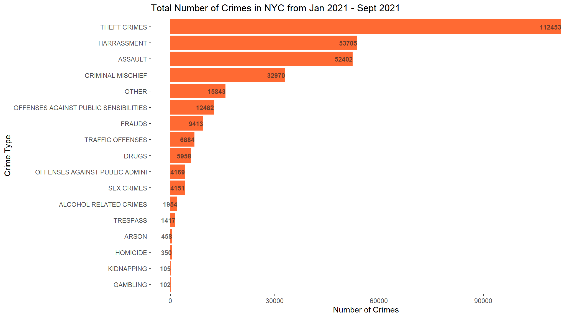
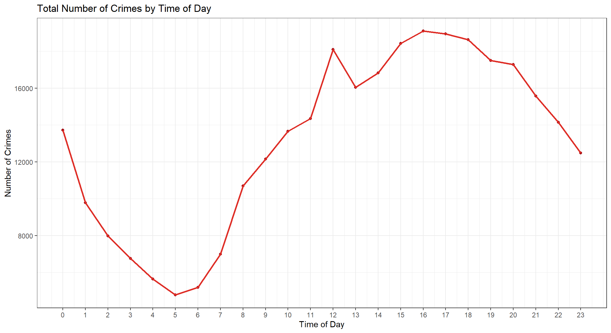
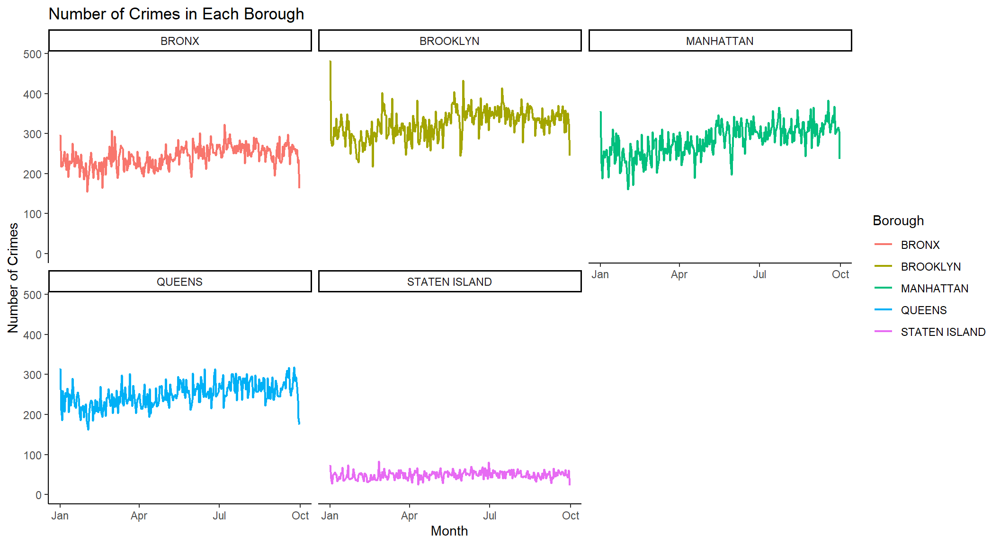
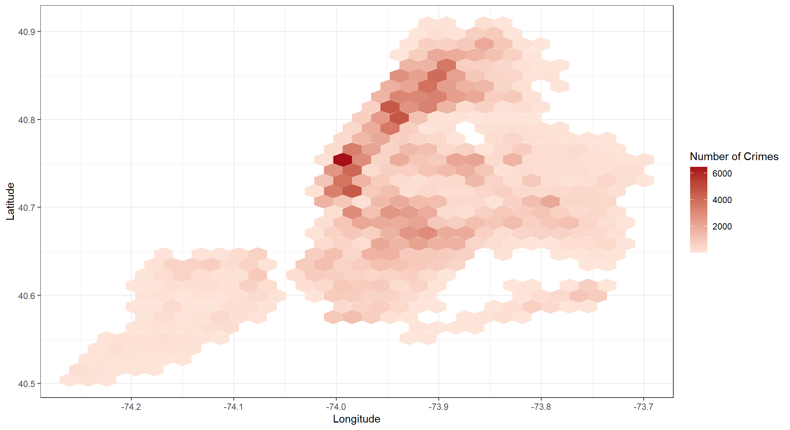
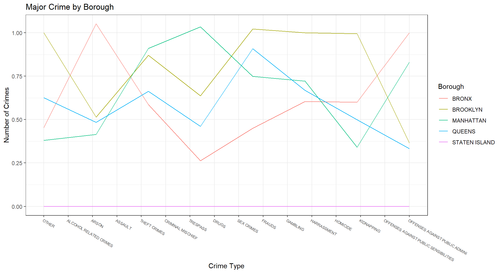
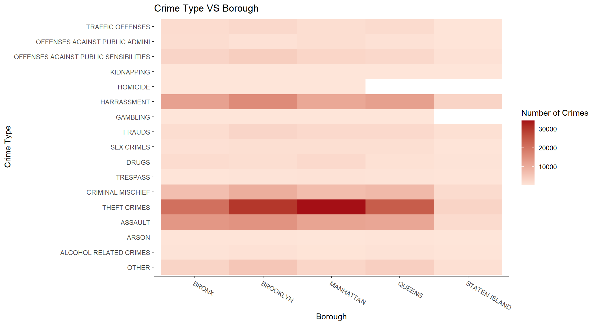
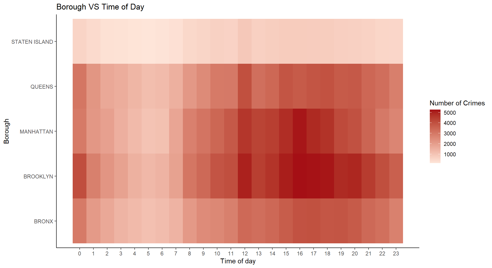

Chapter 5 Results
5.1 Overview

Theft, harassment, assault and criminal mischief occurs much more frequently in NYC.
5.2 Crime Cases and Time
It can been seen most crime peaks occurred in the beginning of a month and the middle of a month. Crime incidents happened more frequently in summer month.
Histograms shows that there indeed exists a pattern in the occurrence of crime with respect to the dimension of time. Summer months have higher occurrence of crime incidents with respect to other corresponding time periods.

The latter parts of the day have higher occurrence of crime incidents. There is a peak of crime at hour 16, indicating more incidents take place during the periods 4:00pm - 4:59pm. There are less incidents in the morning periods (1am - 7am). In particular, very few crime incidents happen during the period of 5am.
5.3 Crime Cases and Location

Brooklyn has highest number of crime, and Staten Island has lowest.
A New York City map by plotting each individual crime cases.

A heat map for all the crime cases. It can be seen that many regions in Brooklyn and Manhattan have very high crime counts.
5.4 Correlations

From the parallel coordinates plot, we can observe that the pattern of Brooklyn and Queens are very similar, so they may form a cluster by the distribution of crime categories.
Also, there seems to be a positive correlation between trepass and theft crimes, trepass and frauds. Police may need to find out the reason for such correlation.

The first heat map shows the relationship between crime type and time of day, that is how different crimes vary by different times of the day. It can be found the crime type of theft crimes is the most common crime type with more than 4000 incidents per hours during the period of peak hours from 12pm to 18pm. Harassment(more prevalent in the afternoon), criminal mischief, and assault(more prevalent in the evening and at night) are also common during the day in NYC.

The second heat map shows the relationship between crime type and borough.Theft crimes, the most common incident, happens frequently in all borough, but most frequently in Manhattan with more than 30000 incidents. It can also be observed that harassment, criminal mischief, and assault are the common types of crime across boroughs, and they happens most frequently in Brooklyn.

The third heat map shows the relationship between borough and time of day. It turns out that Brooklyn is the most dangerous borough and there are more than 3000 incidents per hour during periods of 12pm-12:59pm and 4pm-6:59pm. In addition, Manhattan also has high number of crime incidents during 12pm-6:59pm.